Bướu Giáp Thòng
Nguồn: Xray.vn — xray.vn/buou-giap
I. Đại cương
– Định nghĩa bướu giáp thòng (substernal goiter):
+ Là mô tuyến giáp lan qua lỗ ngực trên và nằm một phần trong lồng ngực; thường biểu hiện thành khối choán chỗ trung thất trên. Bướu có thể ở khoang trước mạch máu, khoang tạng hoặc lan ra sau; không mặc định mọi trường hợp đều thuộc trung thất trước.
+ Phần lớn hình thành do bướu tuyến giáp cổ phát triển kéo dài rồi lan xuống trung thất. Trọng lực và áp lực âm trong lồng ngực góp phần vào sự di chuyển này; đây không phải quá trình xảy ra ở cấp độ vi cấu trúc.
– Tiêu chuẩn xác định bướu giáp thòng:
+ Chưa có một định nghĩa thống nhất. Tiêu chuẩn thường dùng là trên 50% thể tích tuyến giáp nằm dưới lỗ ngực trên.
+ Một số tài liệu dùng các ngưỡng thay thế như bướu lan quá 3 cm dưới hõm ức hoặc xuống đến mức đốt sống ngực T4. Các tiêu chuẩn này không tương đương và không cần đồng thời thỏa mãn.
+ Cần ghi rõ mốc giải phẫu và cách đo khi báo cáo độ lan xuống; chỉ nêu “bướu lớn” hoặc “chìm dưới hõm ức” không đủ để so sánh giữa các tiêu chuẩn.
– Dịch tễ và bản chất mô học:
+ Tần suất thay đổi theo định nghĩa, quần thể và cách tuyển chọn bệnh nhân. Các báo cáo được trích dẫn trong tài liệu nêu tỷ lệ 3–20% trong nhóm bướu giáp và khoảng 1% trong nhóm u trung thất, nhưng không nên xem đây là ước tính hiện mắc chung.
+ Bướu thường là bướu giáp đa nhân lành tính, hay gặp dạng keo hoặc tăng sản dạng nốt; hình ảnh không thay thế được chẩn đoán mô học.
+ Tỷ lệ ác tính thay đổi theo quần thể. Phân tích gộp năm 2025 trên các trường hợp được phẫu thuật ghi nhận tỷ lệ 12,4%; con số này chịu ảnh hưởng của chọn mẫu và không đại diện cho nguy cơ ở mọi người có bướu giáp thòng.
+ Bướu thứ phát từ tuyến giáp cổ thường được cấp máu từ hệ động mạch giáp, chủ yếu là động mạch giáp dưới. Tuyến giáp lạc chỗ trong lồng ngực có thể có mạch nuôi riêng từ các mạch trong ngực.
– Biểu hiện lâm sàng:
+ Bướu thường tiến triển chậm; có thể sờ thấy tuyến giáp to ở cổ nhưng một số người bệnh không có triệu chứng rõ dù hình ảnh đã thấy chèn ép.
+ Triệu chứng chèn ép gồm khó thở, ho, thở rít hoặc khó thở khi nằm do ảnh hưởng khí quản; khó nuốt do ảnh hưởng thực quản; khàn tiếng có thể gặp khi thần kinh thanh quản quặt ngược bị ảnh hưởng.
+ Chèn ép tĩnh mạch lớn có thể gây phù mặt, tĩnh mạch cổ nổi hoặc hội chứng tĩnh mạch chủ trên. Dấu Pemberton (Pemberton sign)—xuất hiện sung huyết mặt hoặc khó thở khi nâng hai tay—có thể gợi ý tắc nghẽn đường thoát tĩnh mạch ở lỗ ngực trên.
+ Chức năng tuyến giáp có thể bình thường hoặc bất thường; không thể suy ra tình trạng cường hay suy giáp chỉ từ kích thước bướu.
+ Trong phân tích gộp năm 2025 trên các nhóm bệnh nhân phẫu thuật, 27,6% không có triệu chứng, 64,8% có triệu chứng chèn ép; hình ảnh ghi nhận lệch khí quản ở 60,6% và chèn ép khí quản ở 48,6%. Đây là số liệu của nhóm phẫu thuật, không đại diện cho toàn bộ người mắc bệnh.
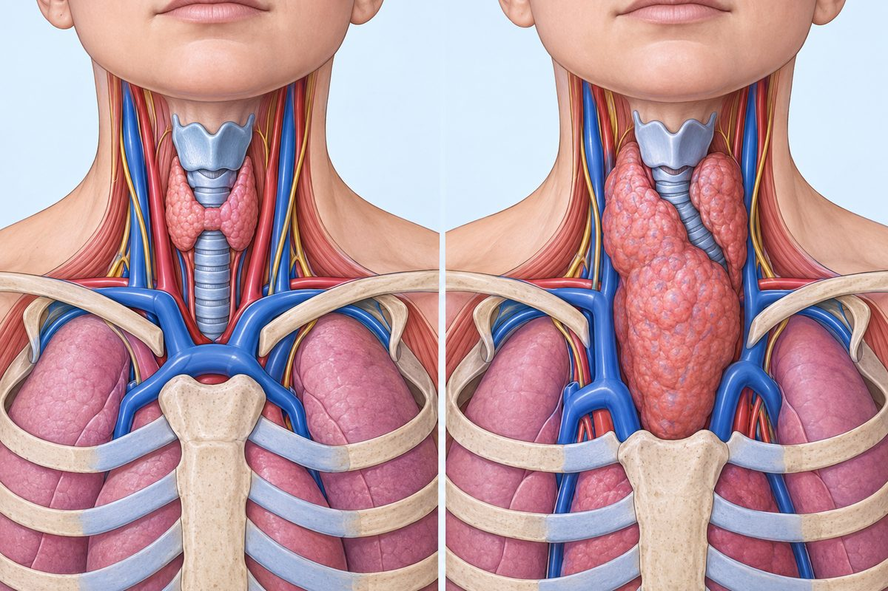
© Chẩn Đoán Hình Ảnh Xray.vn
* Nguyên nhân:
– Bướu thứ phát từ tuyến giáp cổ:
+ Chiếm đa số; một số tài liệu ước tính khoảng 98%, nhưng tỷ lệ thay đổi theo định nghĩa và quần thể nghiên cứu.
+ Hình thành khi bướu tuyến giáp cổ, thường là bướu đa nhân phát triển lâu ngày, lan qua lỗ ngực trên. Sự phát triển liên tục, áp lực âm trong lồng ngực và trọng lực góp phần làm mô giáp đi xuống; không nên xem áp lực âm hoặc trọng lực là cơ chế duy nhất.
+ Thường còn liên tục với tuyến giáp cổ và được cấp máu từ các động mạch giáp, chủ yếu là động mạch giáp dưới. Bướu lan sâu có thể có tuần hoàn bàng hệ từ các mạch trong ngực, vì vậy không nên mặc định chỉ có một nguồn cấp máu.
– Tuyến giáp lạc chỗ nguyên phát trong lồng ngực (primary intrathoracic ectopic thyroid):
+ Là mô tuyến giáp nằm trong lồng ngực, không liên tục với tuyến giáp cổ; nghĩ đến bất thường di chuyển trong quá trình phát triển phôi. Không có tiền sử phẫu thuật tuyến giáp giúp phân biệt với mô giáp còn sót sau mổ.
+ Có thể được cấp máu độc lập từ động mạch ngực trong, thân động mạch cánh tay đầu hoặc các nhánh động mạch chủ; cần xác định giải phẫu mạch trước can thiệp vì nguồn cấp máu thay đổi giữa các trường hợp.
+ Không thấy dải nhu mô nối với tuyến giáp cổ hỗ trợ chẩn đoán nhưng không đủ để khẳng định đơn độc; cần đối chiếu tiền sử phẫu thuật, hình ảnh cổ-ngực và mạch nuôi.
– Mô giáp còn sót hoặc tái phát trong trung thất (forgotten goiter):
+ Là phần mô giáp bị bỏ lại trong trung thất sau phẫu thuật tuyến giáp trước đó, không đồng nghĩa với tuyến giáp lạc chỗ nguyên phát.
+ Tiền sử phẫu thuật và vị trí tổn thương trên hình ảnh giúp phân biệt; cần lưu ý khả năng mô giáp còn sót ngay cả khi không thấy liên tục với tuyến giáp cổ.
II. Giải phẫu
1. Phân chia trung thất
– Trung thất là khoang giải phẫu nằm giữa hai lá phổi, được giới hạn phía trước bởi mặt sau xương ức, phía sau bởi mặt trước cột sống và đầu sau xương sườn, hai bên là màng phổi trung thất, giới hạn trên là lỗ cổ ngực của lồng ngực, giới hạn dưới là phần giữa cơ hoành.
* Phân chia theo phẫu thuật (Thomas. W. Shields)
– Trung thất trước: giới hạn phía trước bởi xương ức và phía sau bởi các mạch máu lớn và màng ngoài tim.
– Trung thất giữa: giới hạn giữa trung thất trước và sau.
– Trung thất sau: được giới hạn phía trước bởi thành sau khí phế quản và mặt sau của màng ngoài tim, giới hạn phía sau bởi thân các đốt sống ngực.
– Ngoài tính theo mặt phẳng trên-dưới, trung thất được chia thành 3 tầng trên, giữa, dưới bởi 2 mặt phẳng ngang: mặt tiếp giáp với quai động mạch chủ và mặt đi qua chỗ phân đôi của khí quản.

* Phân chia theo giải phẫu
– Trung thất trên: thuộc phần trên mặt phẳng đi ngang qua khe gian đốt sống ngực T4-T5 ở phía sau và góc giữa cán – thân xương ức ở phía trước.
– Trung thất trước: khoang nằm dưới mặt phẳng kể trên, giữa phía trước màng ngoài tim và mặt sau xương ức.
– Trung thất giữa: khoang chứa màng ngoài tim và tim.
– Trung thất sau: khoang nằm dưới mặt phẳng kể trên, sau màng ngoài tim và trước thân các đốt sống ngực.


* Phân chia ITMIG (International Thymic Malignancy Interest Group)


– Khoang trước mạch máu:
+ Giới hạn phía trước bởi xương ức và phía sau bởi các mạch máu lớn và màng ngoài tim.
+ Thành phần: tuyến ức, tổ chức mỡ, hạch bạch huyết, tĩnh mạch cánh tay đầu.
+ Bệnh lý thường gặp: bệnh lý tuyến ức, u tế bào mầm, lymphoma, di căn hạch, bướu giáp thòng.
– Khoang tạng:
+ Giới hạn phía trước là khoang trước mạch máu, giới hạn phía sau bởi đường thẳng về phía sau cột sống, cách bờ trước cột sống 1cm.
+ Thành phần: tim, tĩnh mạch chủ trên, động mạch chủ, động mạch phổi, ống ngực, khí phế quản, thực quản, hạch bạch huyết.
+ Bệnh lý thường gặp: bệnh lý tim và mạch máu lớn, bệnh lý khí quản, bệnh lý thực quản, nang đôi (nang màng tim, nang phế quản), bệnh lý hạch.
– Khoang cạnh cột sống:
+ Giới hạn phía trước bởi khoang tạng.
+ Thành phần: cột sống ngực, mô mềm cạnh cột sống.
+ Bệnh lý thường gặp: khối u nguồn gốc thần kinh, nhiễm trùng cột sống, chấn thương cột sống, tạo máu ngoài tủy.


2. Khối u trung thất

III. Chẩn đoán x-quang
1. Đặc điểm hình ảnh
– Khối mờ trung thất trên trên X quang quy ước:
+ Thường biểu hiện bằng rộng trung thất trên hoặc khối cạnh khí quản, bờ có thể rõ và tạo góc tù với trung thất, gợi ý nguồn gốc ngoài nhu mô phổi nhưng không đặc hiệu cho bướu giáp.
+ Đậm độ có thể tương đối đồng nhất; vôi hóa hoặc không đồng nhất vẫn có thể gặp. Vị trí lệch phải không phải dấu hiệu bắt buộc.
+ Phim nghiêng giúp định khu trước-sau; cần xem cả vùng cổ-ngực và bờ khí quản. Phim chụp trước-sau tại giường, xoay người bệnh hoặc hít vào kém có thể làm trung thất trông rộng giả.
+ Không thấy phế quản chứa khí trong khối phù hợp với tổn thương ngoài nhu mô phổi, nhưng dấu này không xác định nguồn gốc tuyến giáp; ngược lại, thấy phế quản chứa khí cần cân nhắc tổn thương nhu mô phổi hoặc phế quản.
– Dấu hiệu đè ép khi bướu lớn:
+ Có thể thấy khí quản bị đẩy lệch, hẹp hoặc biến dạng; đoạn hẹp dài, bờ trơn gợi ý chèn ép từ ngoài, nhưng X quang không đánh giá đầy đủ mức độ và chiều dài chèn ép.
+ Thực quản có thể bị đẩy lệch hoặc chèn ép. Chụp thực quản cản quang chỉ cân nhắc khi cần làm rõ biểu hiện nuốt nghẹn; CT thường cung cấp đánh giá giải phẫu toàn diện hơn.
+ Mức độ lệch trên phim không luôn phản ánh chính xác mức độ triệu chứng hoặc hẹp đường thở.
– Cạm bẫy thực hành trên X quang quy ước:
+ X quang không xác định chắc chắn nguồn gốc tuyến giáp hoặc bản chất mô học; không chẩn đoán xác định chỉ dựa vào hình mờ trung thất trên.
+ U tuyến ức, lymphoma, u tế bào mầm và tổn thương mạch máu có thể cùng biểu hiện bằng rộng trung thất; X quang thường không phân biệt đáng tin cậy các nguyên nhân này.
+ Tổn thương chìa khóa cần tìm là khối vùng cổ-ngực đi kèm đẩy lệch hoặc hẹp khí quản; đối chiếu phim cũ giúp nhận biết tiến triển. Khi nghi ngờ bướu giáp thòng, cần khảo sát tiếp bằng CT cổ-ngực để xác định liên quan với tuyến giáp, đường thở và mạch máu.
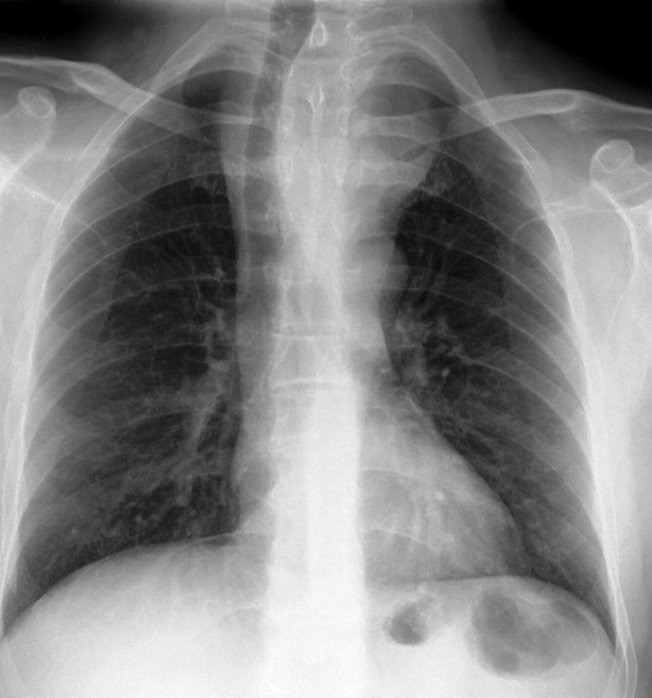
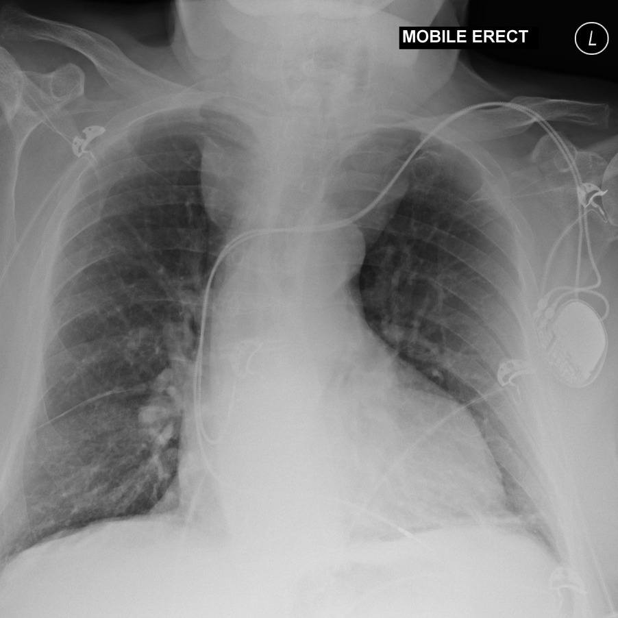
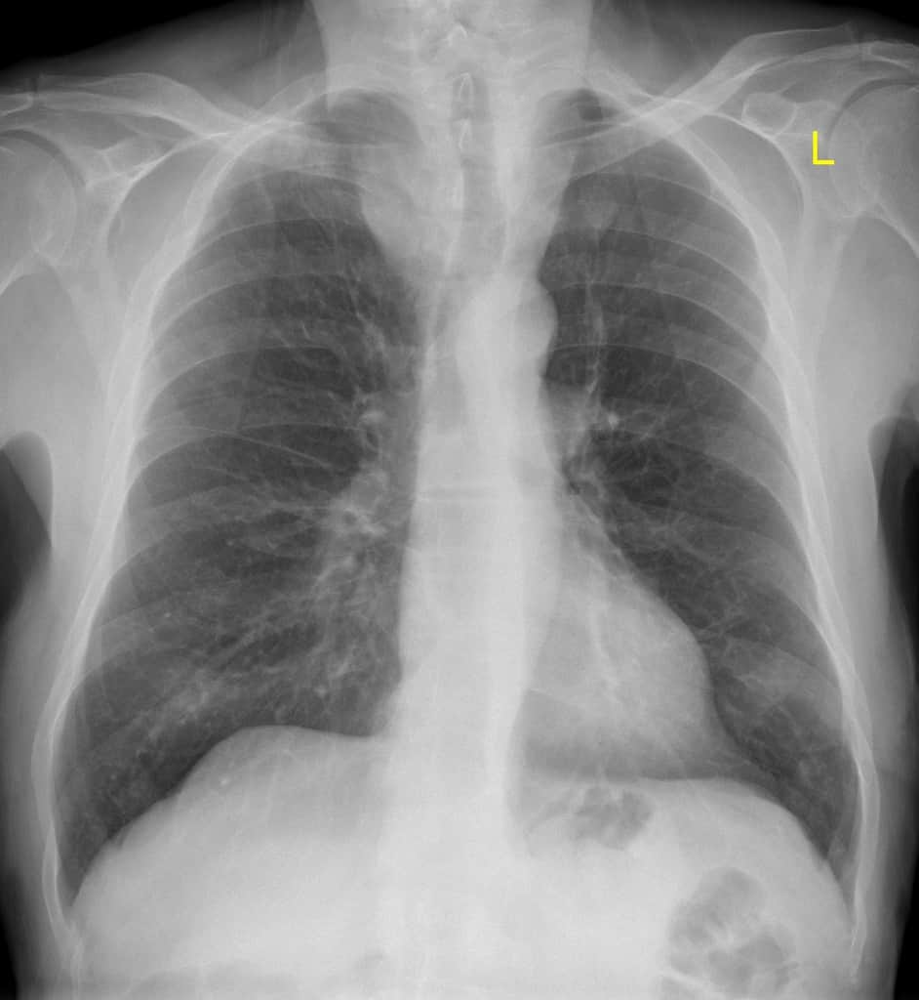
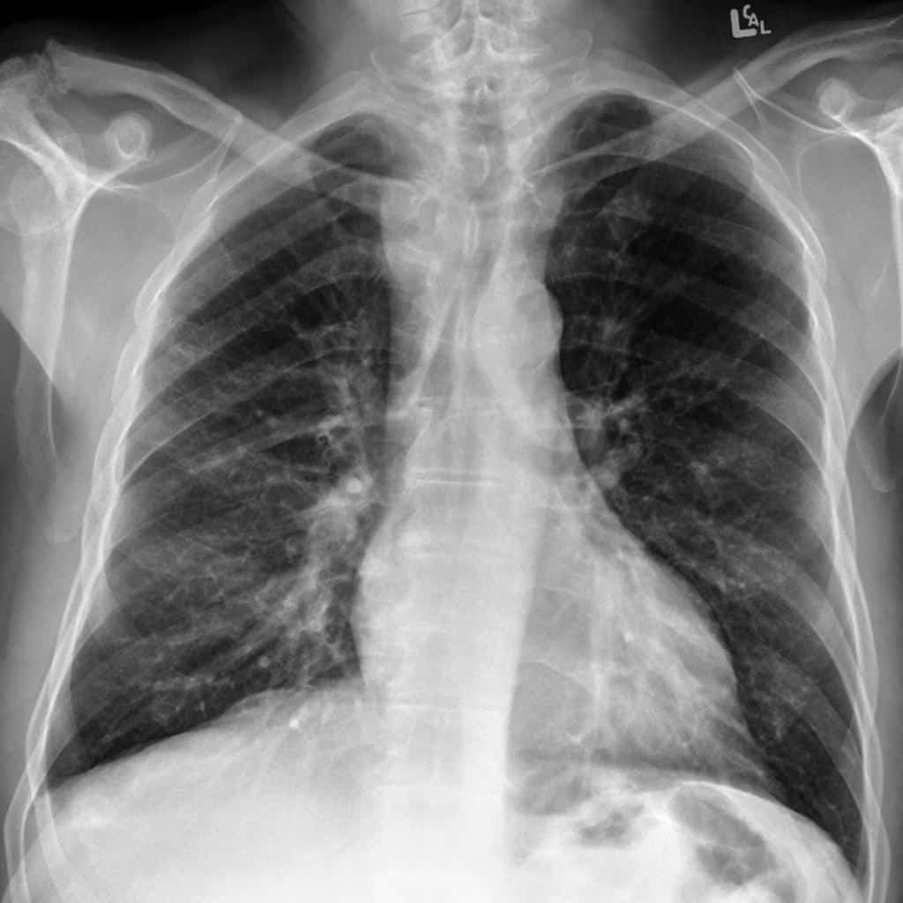
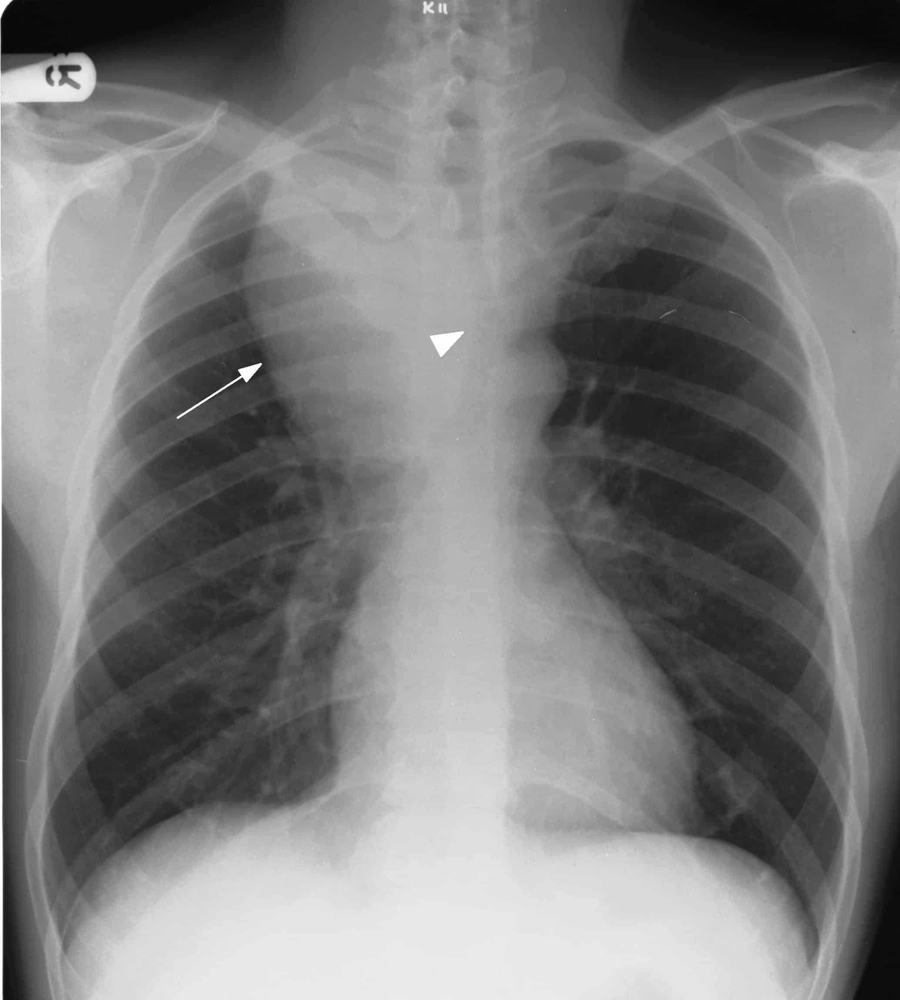
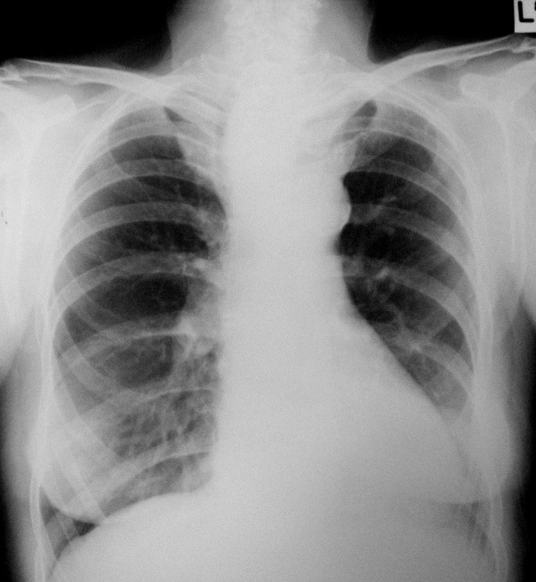
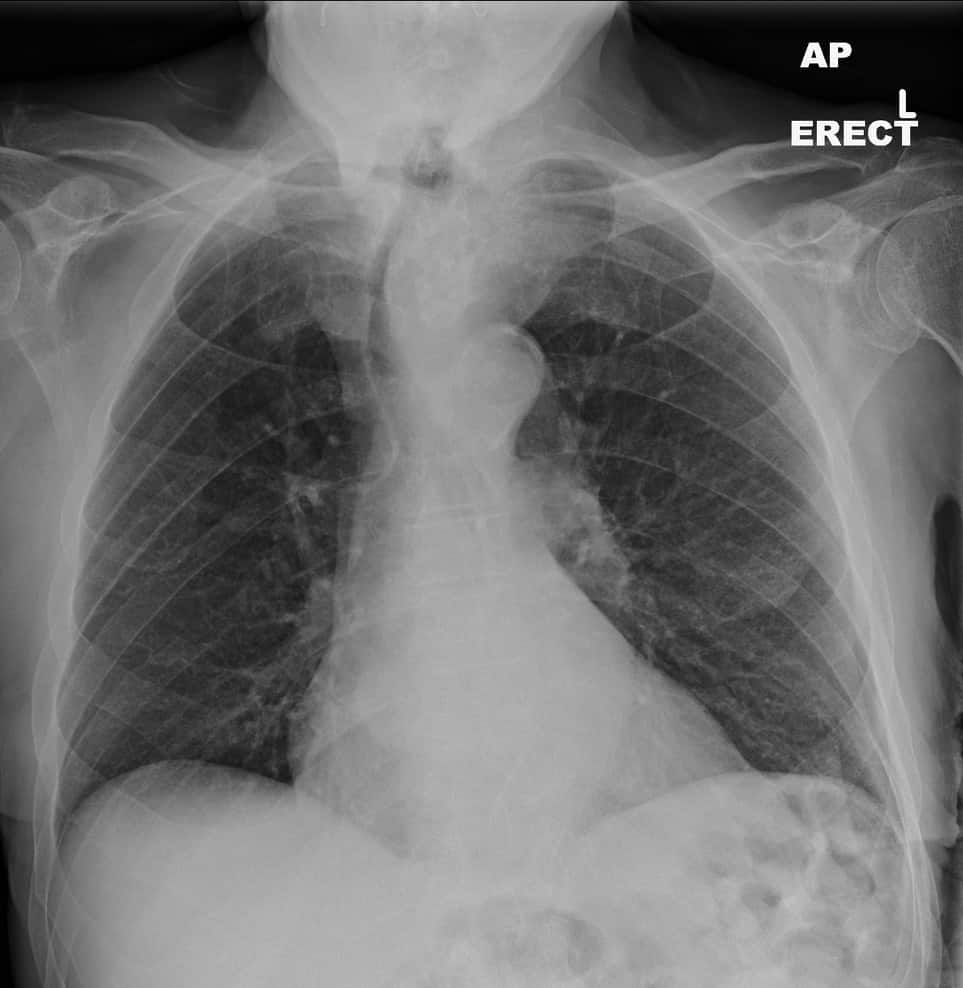
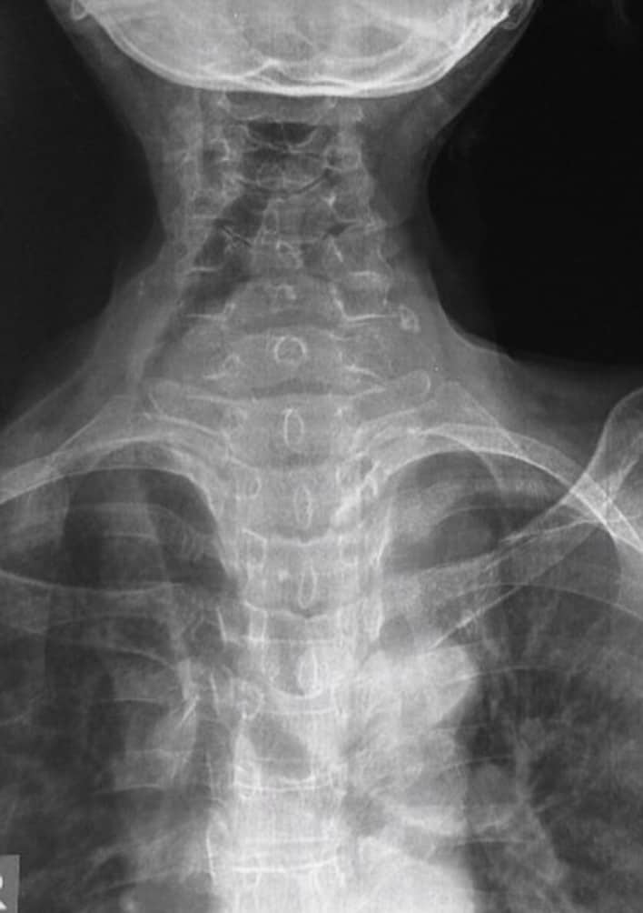
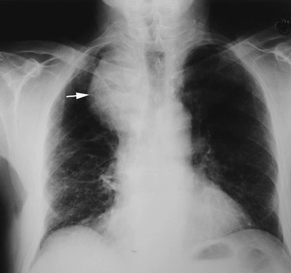
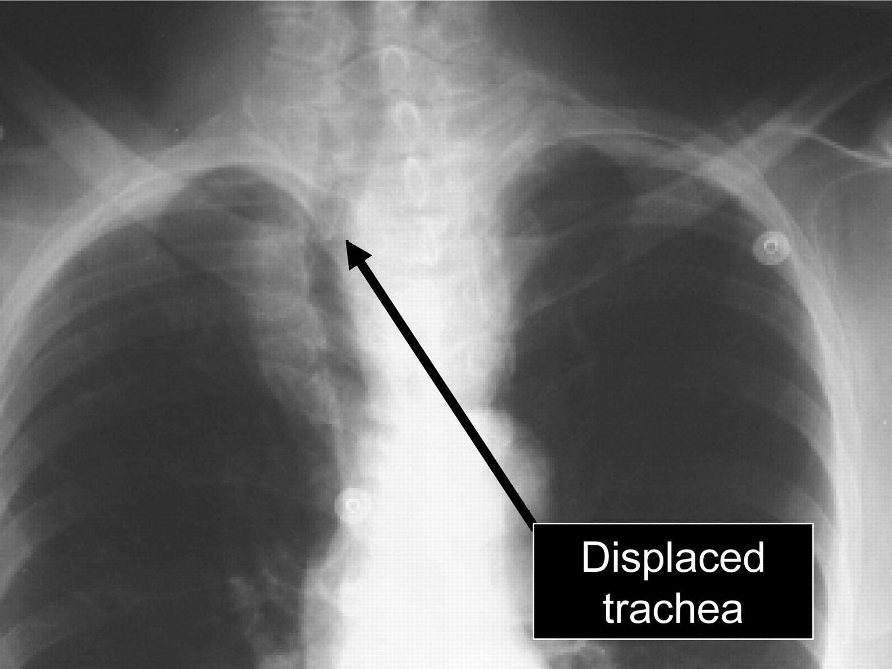
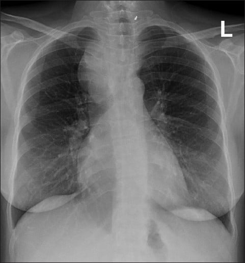
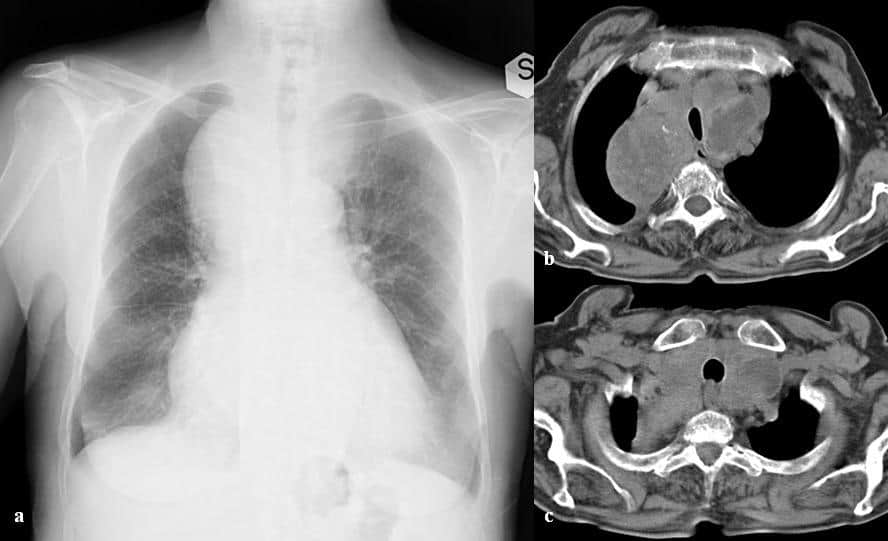
=> Case lâm sàng 1:
=> Case lâm sàng 2:
2. Dấu hiệu cổ ngực
– Dấu hiệu cổ ngực (cervicothoracic sign):
+ Là dấu hiệu định khu trên X quang dựa trên nguyên lý xóa bờ; áp dụng cho khối trung thất trên có phần vượt lên trên xương đòn. Dấu hiệu gợi ý vị trí trước hay sau, không xác định bản chất khối.
+ Bờ trên bị xóa khi khối tiếp xúc với mô mềm vùng cổ có đậm độ tương tự; bờ còn rõ khi khối được bao quanh bởi khí phổi.
– Dấu hiệu dương tính gợi ý tổn thương trung thất trước:
+ Bờ trên của khối mờ bị xóa hoặc không xác định được khi vượt lên trên xương đòn, do chồng với mô mềm vùng cổ; dấu hiệu này gợi ý khối nằm ở trung thất trước.
+ Bướu giáp thòng là một nguyên nhân cần nghĩ đến, nhất là khi thấy khối liên tục từ vùng cổ xuống trung thất; dấu hiệu cổ ngực không đặc hiệu và không đủ để xác định chẩn đoán.
+ Dấu hiệu kém tin cậy nếu khối không vượt lên trên xương đòn hoặc phim bị xoay, chụp tư thế không chuẩn hay chồng hình; cần khảo sát CT khi cần xác định vị trí và nguồn gốc khối.

=> Case lâm sàng 1:
– Dấu hiệu âm tính gợi ý tổn thương trung thất sau:
+ Khi bờ trên của khối mờ còn thấy rõ phía trên xương đòn, khối có thể được bao quanh bởi khí phổi; dấu hiệu này gợi ý vị trí phía sau.
+ Dấu hiệu không khẳng định khối thuộc trung thất sau: tổn thương đỉnh phổi hoặc màng phổi cũng có thể có bờ trên rõ. Chỉ áp dụng khi khối vượt lên trên xương đòn và cần đối chiếu các dấu hiệu định khu khác.
=> Case lâm sàng 1:
IV. Chẩn đoán CLVT
1. Đặc điểm hình ảnh
– Khối có bờ rõ và liên tục với tuyến giáp cổ:
+ Bờ thường rõ, có thể dạng thùy; dấu hiệu định hướng mạnh nhất cho nguồn gốc tuyến giáp là thấy mô bướu liên tục với tuyến giáp cổ trên các lát cắt mỏng liên tiếp và tái tạo đa mặt phẳng.
+ Không thấy dải nối không loại trừ bướu thứ phát: cuống nối có thể rất hẹp, bị che khuất bởi bướu lớn hoặc đã bị gián đoạn sau phẫu thuật. Cần đối chiếu tiền sử và nguồn cấp máu trước khi kết luận tuyến giáp lạc chỗ.
– Đậm độ và ngấm thuốc:
+ Trên CT trước tiêm, mô giáp thường tăng đậm độ so với cơ do chứa iod trong keo tuyến giáp; mức đậm độ thay đổi theo thành phần bướu, và đậm độ không cao không loại trừ nguồn gốc tuyến giáp.
+ Sau tiêm, bướu thường ngấm thuốc mạnh do tưới máu phong phú; mức độ và tính đồng nhất thay đổi theo thì chụp và các thành phần thoái hóa nang, xuất huyết hoặc xơ hóa.
+ Đậm độ cao trước tiêm và ngấm thuốc mạnh là dấu hiệu gợi ý, không đặc hiệu; cần tìm sự liên tục với tuyến giáp cổ và đánh giá hình thái tổng thể.
– Vôi hóa trong khối:
+ Có thể gặp vôi hóa thô, lấm tấm hoặc dạng viền; hình thái thay đổi theo thành phần và diễn tiến của bướu.
+ Tỷ lệ 62% được nêu trong một số báo cáo nhưng phụ thuộc quần thể và tiêu chí ghi nhận; không nên xem là tần suất áp dụng cho mọi nhóm bệnh nhân.
+ Vôi hóa dạng viền không đủ để kết luận lành tính; kiểu vôi hóa đơn độc cũng không phân biệt chắc chắn tổn thương lành và ác tính.
– Vị trí và hiệu ứng choán chỗ:
+ Bướu thường lan xuống từ trung thất trên nhưng có thể đến trung thất giữa hoặc nằm lệch trước, sau các mạch máu lớn; cần mô tả mức thấp nhất, kể cả tương quan với quai động mạch chủ và carina.
+ Bướu thường đẩy lệch hoặc chèn ép khí quản, thực quản và mạch máu. Vị trí sau mạch không đủ để phân biệt với u tuyến ức, vì bướu giáp có thể nằm ở nhiều khoang trung thất.
+ Bờ không đều, xâm lấn cấu trúc lân cận hoặc hạch bất thường làm tăng nghi ngờ ác tính; tuy nhiên, bướu lành tính lớn vẫn có thể gây chèn ép đáng kể.
– Cạm bẫy thực hành trên MDCT:
+ U tuyến cận giáp lạc chỗ và hạch tăng sinh mạch cũng có thể tăng đậm độ hoặc ngấm thuốc mạnh; cần đối chiếu tính liên tục với tuyến giáp, vị trí và bối cảnh lâm sàng.
+ Xẹp phổi hoặc biến dạng mô phổi cạnh bướu do chèn ép có thể giả xâm lấn. Đọc đa mặt phẳng để đánh giá mặt tiếp xúc, cấu trúc bị đẩy lệch và dấu hiệu xâm lấn thực sự.
+ Tổn thương chìa khóa là lần theo mô bướu từ cổ xuống ngực và lập bản đồ quan hệ với khí quản, thực quản, mạch máu cùng các mạch nuôi; không mặc định mọi bướu đều chỉ được cấp máu từ động mạch giáp dưới.
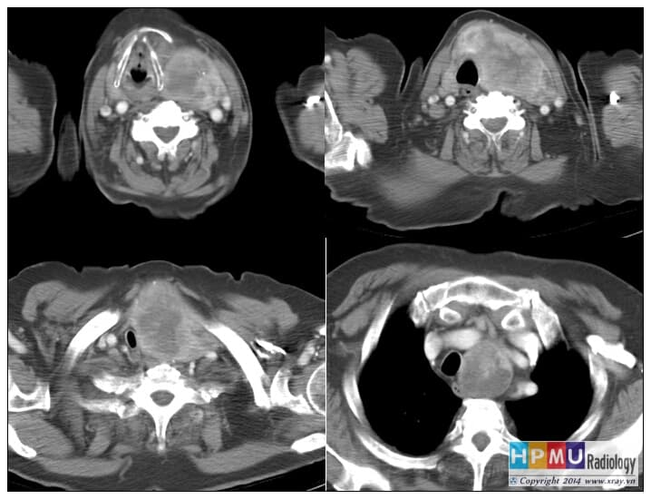
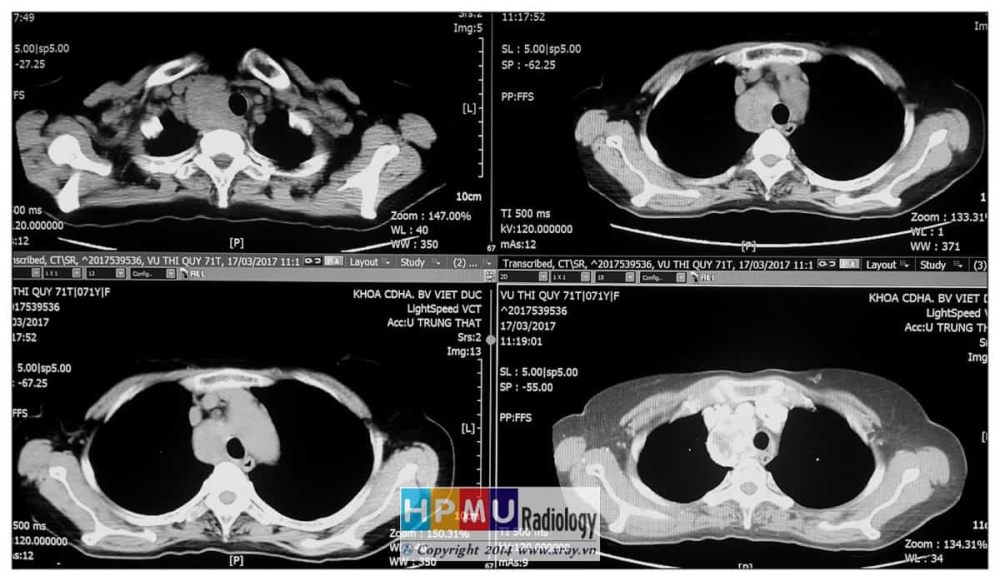
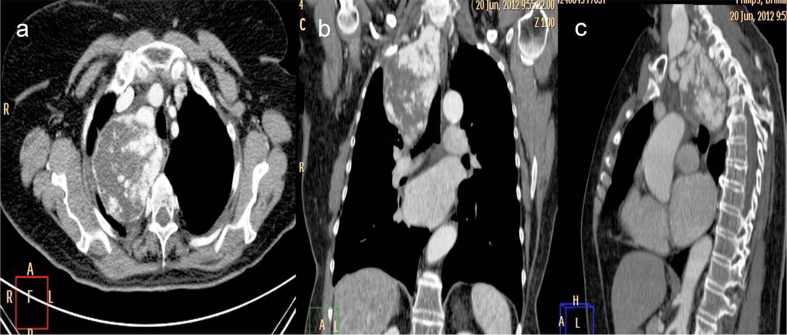
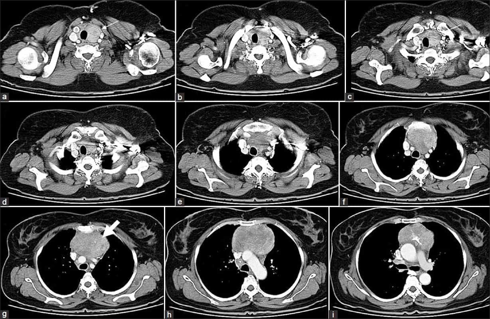
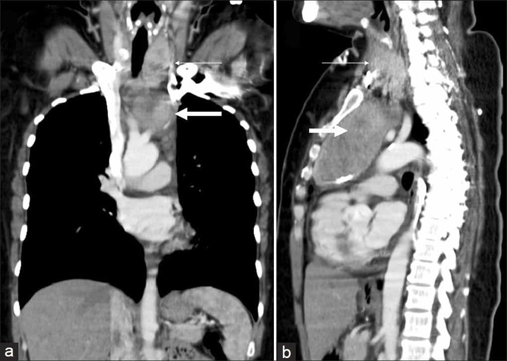
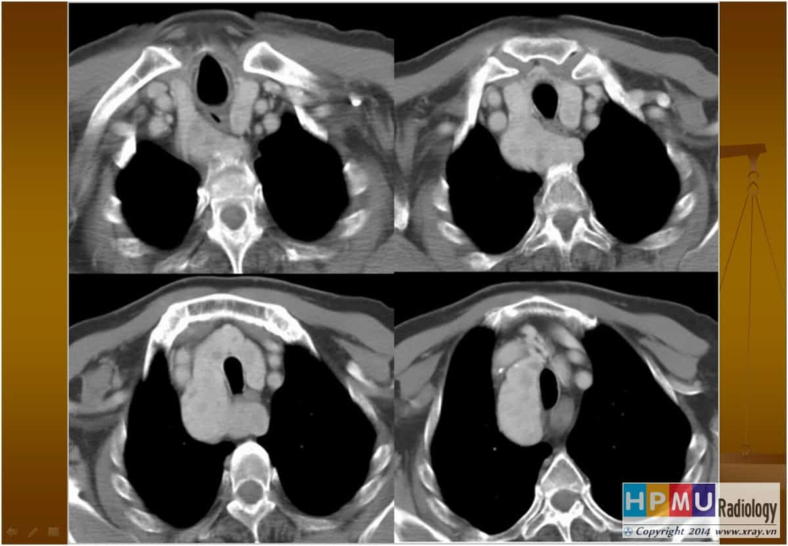
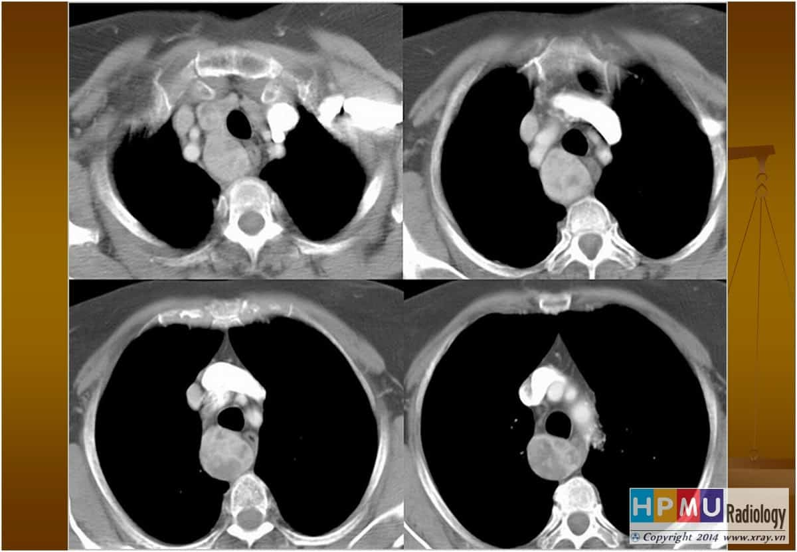
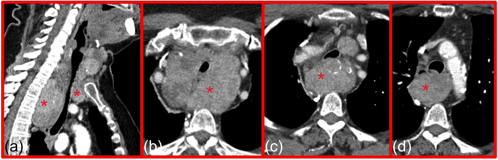
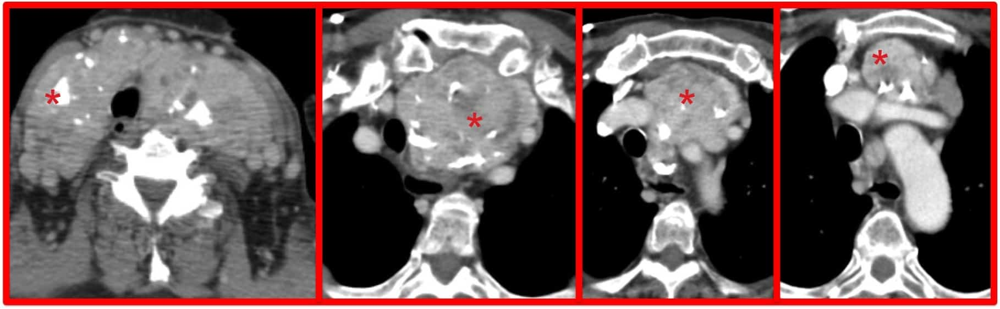
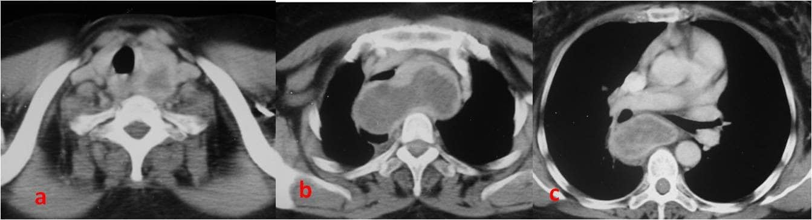
=> Case lâm sàng 1:


=> Case lâm sàng 2:


=> Case lâm sàng 3:


=> Case lâm sàng 4:


=> Case lâm sàng 5:


2. Phân loại
– Phân loại hình thái Cvasciuc (2017):
+ Dựa trên hình dạng bướu trên CT, nhằm hỗ trợ dự đoán mức độ khó khi đưa phần bướu trung thất qua đường mổ cổ và lập kế hoạch tiếp cận.
+ Phân loại được đề xuất từ một loạt ca hồi cứu tại một trung tâm; không phải hệ thống duy nhất và không tự quyết định đường mổ.
– Loại A, hình chóp có đỉnh hướng xuống dưới:
+ Phần lớn mô giáp còn ở cổ, phần đỉnh kéo dài xuống trung thất; thường còn liên tục với tuyến giáp cổ.
+ Trong loạt ca đề xuất phân loại, thường lấy được qua đường cổ; hình thái này không bảo đảm mọi trường hợp đều thuận lợi hoặc có cùng nguồn cấp máu.
– Loại B, hình chóp có đỉnh hướng lên trên:
+ Phần đáy rộng nằm trong trung thất, đỉnh hướng lên cổ; bề rộng đáy và mức lan xuống ảnh hưởng khả năng đưa bướu qua lỗ ngực trên.
+ Có thể khó lấy qua đường cổ hơn loại A; cần đánh giá CT về kích thước đáy, mức lan, liên quan với khí quản và mạch máu. Không mặc định luôn có chèn ép hoặc cần mở ngực.
– Loại C, bướu hai thùy có eo hoặc cuống hẹp:
+ Phần cổ và phần trung thất nối với nhau bằng một đoạn hẹp; hình thái này có thể khiến phần trung thất khó được nhận biết và lấy ra đầy đủ.
+ Cần xác định đoạn nối và kích thước phần trung thất trên tái tạo đa mặt phẳng để hỗ trợ lập kế hoạch, giảm nguy cơ để sót mô giáp.
– Loại D, mô giáp không liên tục với tuyến giáp cổ:
+ Gồm tuyến giáp lạc chỗ nguyên phát trong lồng ngực hoặc mô giáp còn sót sau phẫu thuật trước đó; không giới hạn ở trung thất trước.
+ Tuyến giáp lạc chỗ có thể có mạch nuôi riêng từ các mạch trong ngực; mô giáp còn sót có thể có nguồn cấp máu khác nhau. Cần đối chiếu tiền sử phẫu thuật và lập bản đồ mạch trước can thiệp.
+ Trong loạt ca đề xuất phân loại, nhóm này thường cần cân nhắc đường tiếp cận qua lồng ngực; quyết định thực tế phụ thuộc vị trí, mức lan và giải phẫu mạch.


V. Chẩn đoán phân biệt
– Bướu giáp thòng (substernal goiter):
+ Dấu hiệu định hướng mạnh là mô bướu liên tục với tuyến giáp cổ trên CT cổ-ngực; đậm độ trước tiêm thường cao do iod trong keo tuyến giáp và bướu thường ngấm thuốc mạnh.
+ Có thể không đồng nhất, có nang thoái hóa hoặc vôi hóa; các đặc điểm này không tự xác định lành hay ác. Bướu thường đẩy lệch hoặc chèn ép cấu trúc lân cận, nhưng không thể loại trừ xâm lấn chỉ dựa vào dấu hiệu đẩy lệch.
+ Không thấy dải nối không loại trừ nguồn gốc tuyến giáp, nhất là khi cuống nối hẹp, có tiền sử phẫu thuật hoặc có tuyến giáp lạc chỗ.
– U tuyến ức (thymoma):
+ Thường nằm ở khoang trước mạch máu và không liên tục với tuyến giáp cổ; vị trí này gợi ý nhưng không đủ để phân biệt vì bướu giáp cũng có thể lan vào khoang trước mạch máu.
+ Khối có thể đồng nhất hoặc không đồng nhất, có nang hóa hay vôi hóa; ngấm thuốc thay đổi nên không dựa vào mức ngấm thuốc hoặc vôi hóa đơn độc để phân biệt với bướu giáp.
+ Nhược cơ hoặc hội chứng tự miễn đi kèm hỗ trợ chẩn đoán nhưng không phải lúc nào cũng hiện diện.
– Lymphoma trung thất (mediastinal lymphoma):
+ Thường tạo nhiều nhóm hạch hoặc khối hạch hợp lưu, có thể bao quanh mạch; bướu giáp thường được nhận diện nhờ liên tục với tuyến giáp cổ và có thể tăng đậm độ trước tiêm do iod.
+ Hạch cổ, thượng đòn, rốn phổi hoặc nách và lách to hỗ trợ bệnh lý hạch hệ thống. Tuy nhiên, lymphoma cũng có thể gây chèn ép hoặc đẩy lệch khí quản; không dùng riêng dấu hiệu bao quanh mạch để kết luận.
+ Đậm độ và mức ngấm thuốc thay đổi theo thể bệnh, hoại tử hoặc điều trị trước đó; cần phối hợp lâm sàng và xét nghiệm, có thể cần lấy mẫu mô.
– U quái trung thất trưởng thành (mature mediastinal teratoma):
+ Khối có phối hợp mỡ đại thể, dịch và vôi hóa; đôi khi thấy răng. Khi có nhiều thành phần mô đặc trưng này, chẩn đoán u quái được ưu tiên hơn bướu giáp thòng.
+ Thành phần mỡ đại thể có đậm độ HU âm, thường dưới −20 HU. Không thấy mỡ hoặc răng không loại trừ u quái; bướu giáp có thoái hóa nang cũng có thể không đồng nhất nhưng thường không có thành phần mỡ đại thể.
+ Khối thường ở khoang trước mạch máu; vị trí và tuổi người bệnh chỉ có giá trị gợi ý, không thay thế phân tích thành phần trên CT.
– U tuyến cận giáp lạc chỗ (ectopic parathyroid adenoma):
+ Có thể là khối nhỏ, tăng sinh mạch ở cổ thấp hoặc trung thất, không liên tục với tuyến giáp; mức ngấm thuốc mạnh có thể chồng lấp với bướu giáp.
+ Nồng độ calci và hormon tuyến cận giáp, kết hợp đặc điểm ngấm thuốc theo thì, giúp phân biệt khi nghi ngờ.
– Phình động mạch chủ ngực (thoracic aortic aneurysm):
+ Khối liên tục với động mạch chủ và ngấm thuốc tương tự lòng mạch; huyết khối thành hoặc vôi hóa thành mạch có thể làm hình ảnh phức tạp hơn.
+ Cần loại trừ tổn thương mạch máu trước khi sinh thiết hoặc can thiệp; không dựa riêng vào hình dạng khối hay dấu hiệu chèn ép để phân biệt với bướu giáp.

VI. Tiên lượng & Điều trị
– Tiên lượng:
+ Bướu giáp thòng thường tiến triển chậm và đa số lành tính; tiên lượng phụ thuộc mức độ chèn ép khí quản và các cơ quan trung thất, chức năng tuyến giáp, bệnh kèm và mô bệnh học.
+ Khó thở tăng dần, khó thở khi nằm hoặc thở rít gợi ý chèn ép đường thở đáng kể; khó thở cấp hoặc thở rít cần được đánh giá khẩn.
+ Tỷ lệ ác tính là 12,4% trong tổng quan các ca đã phẫu thuật của Cheung và cộng sự (2025); đây là ước tính ở quần thể chọn lọc, không phải nguy cơ chung của mọi người bệnh bướu giáp thòng.
– Điều trị:
+ Lựa chọn giữa theo dõi và phẫu thuật dựa trên triệu chứng, mức độ chèn ép trên CT, tiến triển kích thước, nghi ngờ ác tính, chức năng tuyến giáp, nguy cơ phẫu thuật và nguyện vọng người bệnh. Phẫu thuật thường được cân nhắc khi có triệu chứng chèn ép, chèn ép đáng kể hoặc tiến triển trên hình ảnh, bướu tăng kích thước, nghi ngờ ác tính hoặc cường giáp khó kiểm soát.
+ Có thể theo dõi chọn lọc người bệnh không triệu chứng, không có chèn ép đáng kể hay dấu hiệu nghi ngờ ác tính, nhất là khi nguy cơ phẫu thuật cao; theo dõi lâm sàng, chức năng tuyến giáp và hình ảnh theo diễn tiến, chưa có khoảng theo dõi đồng nhất áp dụng cho mọi trường hợp.
+ Điều trị nội khoa kiểm soát rối loạn chức năng tuyến giáp nhưng không giải quyết đáng tin cậy khối chèn ép. I-131 có thể được cân nhắc ở một số trường hợp bướu tăng chức năng hoặc không phù hợp phẫu thuật; không thay thế phẫu thuật giải ép khi chèn ép nặng.
+ Khi phẫu thuật được chỉ định, phạm vi cắt tuyến tùy phân bố tổn thương và tình trạng thùy đối bên. Hướng dẫn AAES (2020) khuyến nghị chụp cắt lớp vi tính khi nghi có thành phần thòng để đánh giá mức lan và lập kế hoạch mổ.
+ Đa số trường hợp có thể lấy qua đường cổ; mở xương ức hoặc đường ngực dành cho trường hợp chọn lọc khi khối quá sâu, khó tiếp cận an toàn qua cổ, có vị trí lạc chỗ hoặc giải phẫu phức tạp. Tổng quan hệ thống và phân tích gộp năm 2025 ghi nhận 88,7% ca phẫu thuật thực hiện qua đường cổ đơn thuần và 10,4% cần thêm can thiệp đường ngực; mức độ thòng hay phân loại hình ảnh đơn lẻ không quyết định chắc chắn đường mổ.
+ Biến chứng cần lưu ý gồm tổn thương thần kinh thanh quản quặt ngược, suy cận giáp/hạ calci máu, chảy máu hoặc tụ máu và nhuyễn khí quản. Nhóm cần đường mổ ngực có tỷ lệ biến chứng cao hơn trong các nghiên cứu, nhưng chưa thể tách biệt ảnh hưởng của đường mổ với độ phức tạp của bệnh. Sau mổ cần theo dõi đường thở, giọng nói, calci máu và kết quả mô bệnh học; sau cắt toàn bộ tuyến giáp cần điều trị hormone thay thế lâu dài.
Tài liệu tham khảo
* Intrathoracic Goiter – James J. McCort, M.D.Boston, Mass
* Rare mediastinal masses: Imaging aspects – S. Hantous-Zannad, H. Mhalla, A. Zidi
* ITMIG classification of mediastinal anatomy: exposure through augmented reality – M. F. Tapia, D. Hasson, J. Alegria; Santiago/CL, Santiago de Chile/CL
* Mediastinal masses: A Systematic Approach to Differential Diagnosis – S. ABU ARIF, V. Helbo Jensen; Herning/DK
* Approach to Management of the Patient with Primary or Secondary Intrathoracic Goiter – Laszlo Hegedüs, Steen J. Bonnema
* RETROSTERNAL GOITRES: A PRACTICAL CLASSIFICATION – I.T. Cvasciuc, S. Fraser and M. Lansdown
* Intrathoracic mediastinal thyroid goiter: imaging manifestations – J A Buckley, P Stark
* CT cross-sectional imaging classification system for substernal goiter based on risk factors for an extracervical surgical approach – Giuseppe Mercante, Enrico Gabrielli, Corrado Pedroni, Debora Formisano
* Imaging findings of lesions in the middle and posterior mediastinum – Yoshiyuki Ozawa, Marehiko Hiroshima, Hiroyuki Maki